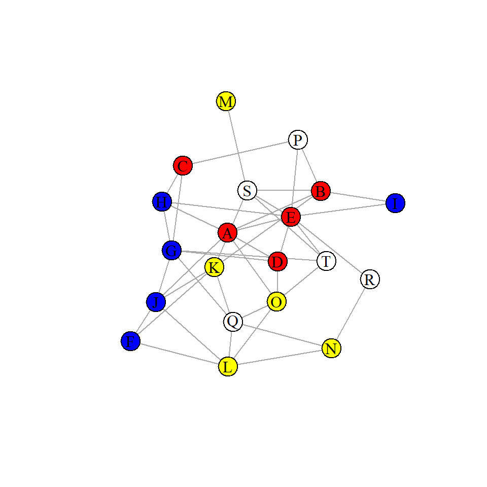
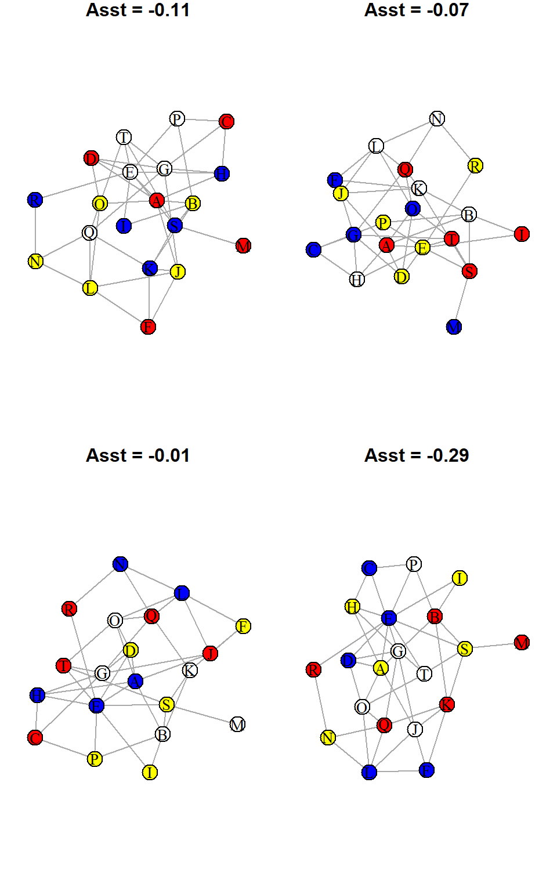
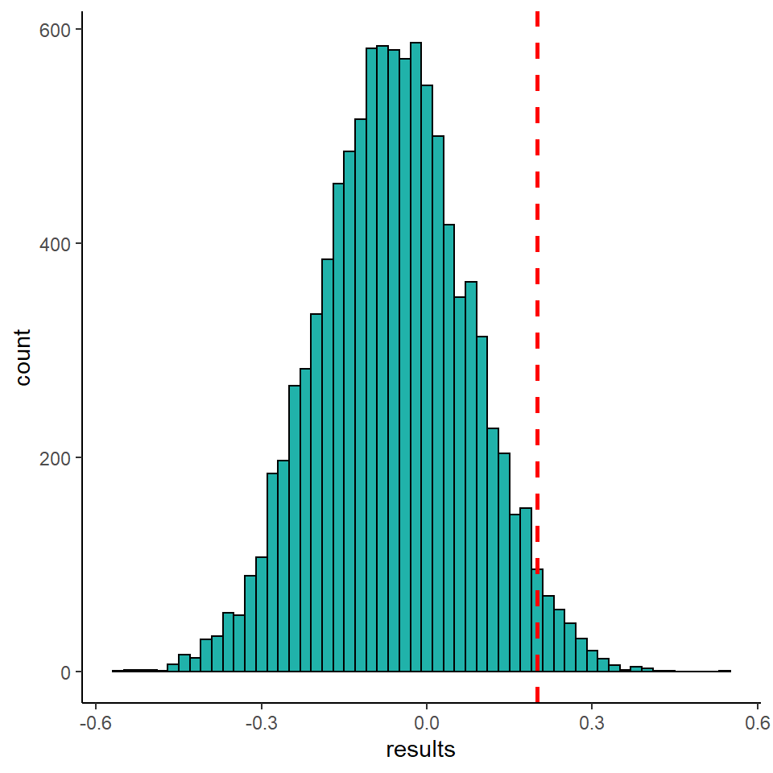
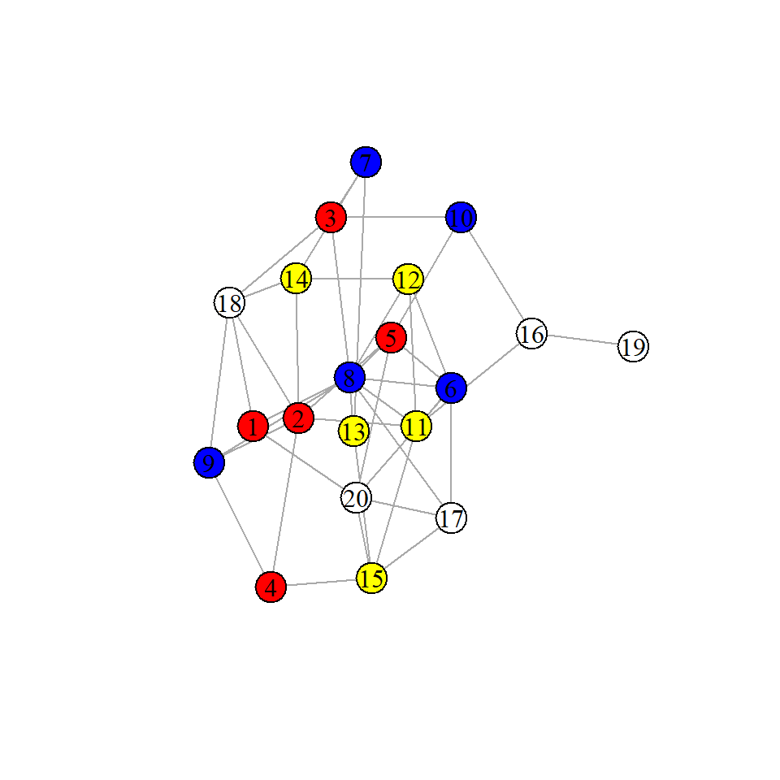
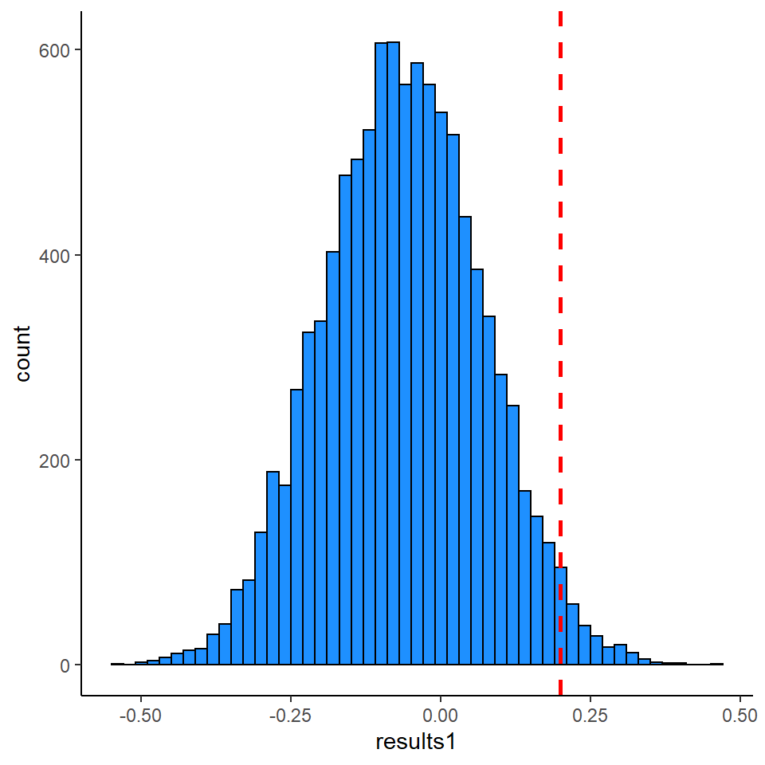
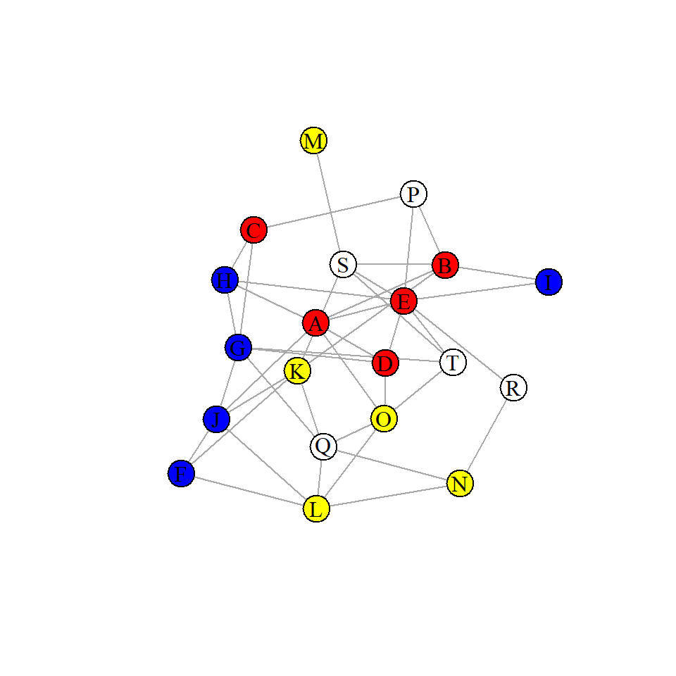
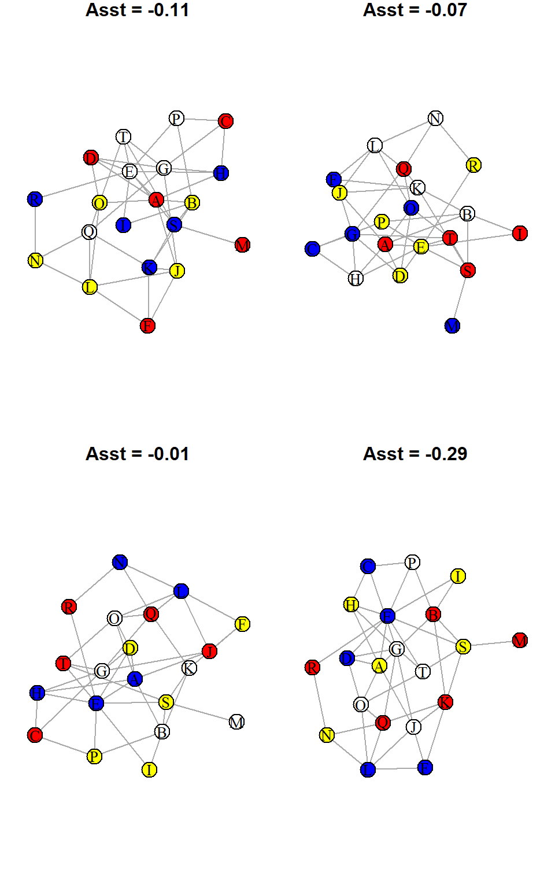
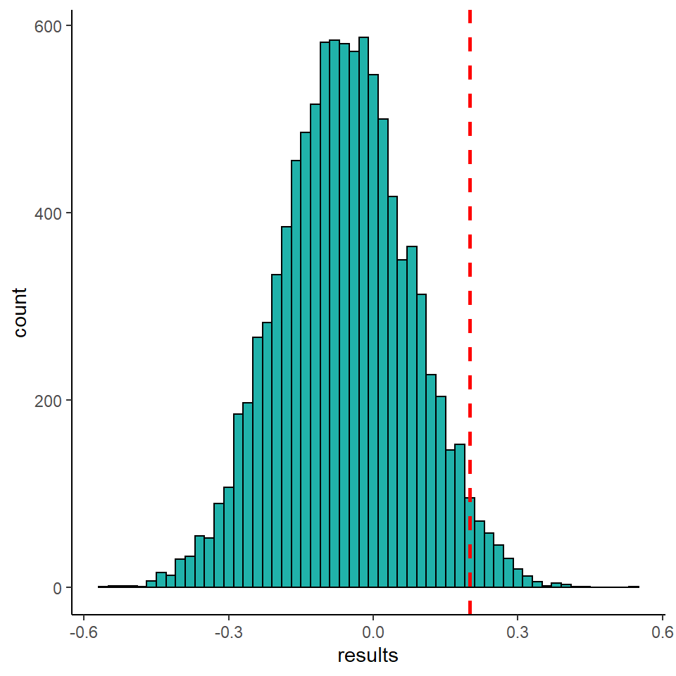
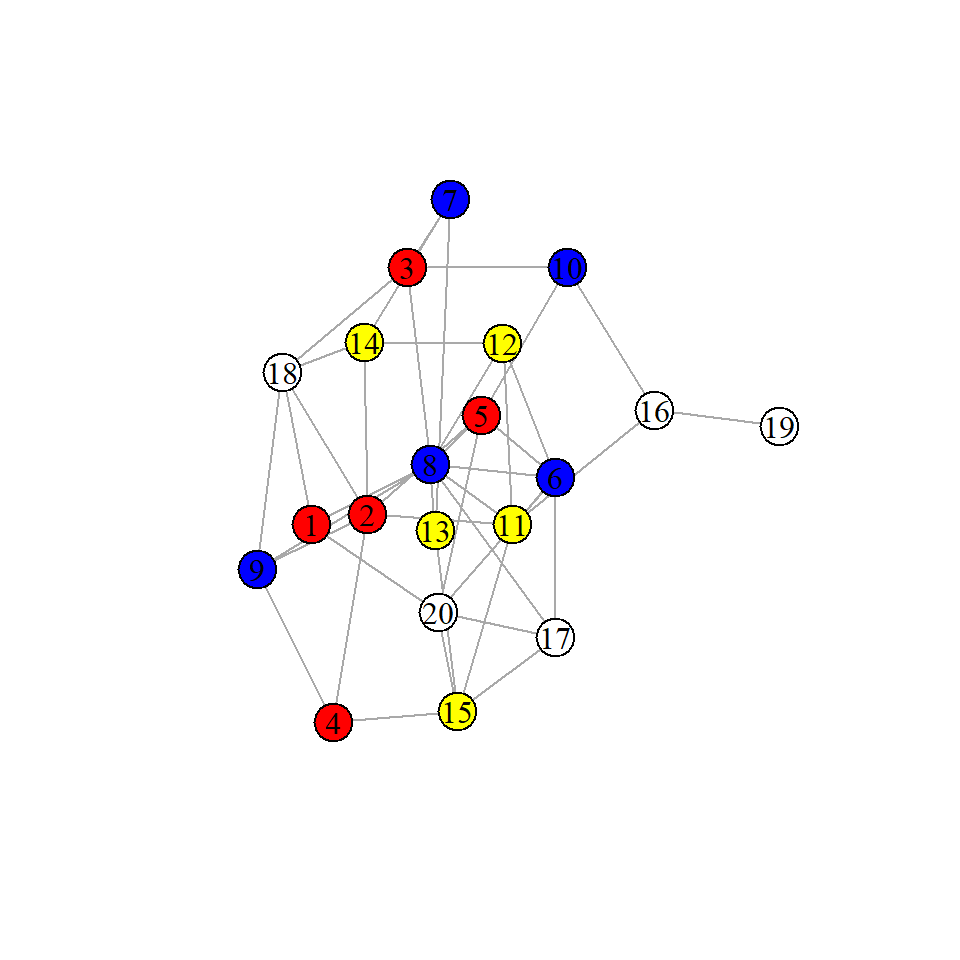
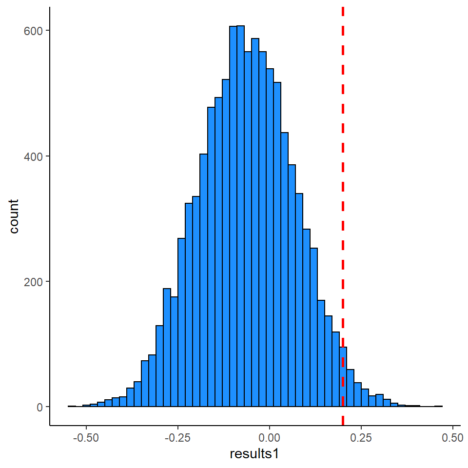

There has been a lot of recent discussion about the utility and appropriateness of permutation methods in social networks. See these papers for more information:
I will write longer examples of some of the issues raised in these papers soon. First, we’ll discuss some very basic ideas of what permutations can be.
Node Permutation Example
Imagine with have a network with 20 individuals. They are split into four different groups. We’ll label these groups red, blue, yellow and white.
ids <- LETTERS[1:20]
colors <- c("red","blue","yellow","white")
names(ids) <- rep(colors, each=5)
ids
## red red red red red blue blue blue blue blue yellow yellow yellow yellow
## "A" "B" "C" "D" "E" "F" "G" "H" "I" "J" "K" "L" "M" "N"
## yellow white white white white white
## "O" "P" "Q" "R" "S" "T"
We can also store this same data as a data.frame giving each node and its group membership (which we’ll call color).
nodes <- data.frame(ids,color = rep(colors, each=5))
nodes
## ids color
## 1 A red
## 2 B red
## 3 C red
## 4 D red
## 5 E red
## 6 F blue
## 7 G blue
## 8 H blue
## 9 I blue
## 10 J blue
## 11 K yellow
## 12 L yellow
## 13 M yellow
## 14 N yellow
## 15 O yellow
## 16 P white
## 17 Q white
## 18 R white
## 19 S white
## 20 T white
We are going to simulate some interactions between these individuals. That is, we are going to create an edgelist. The following code produces 50 interactions between pairs of individuals:
df <- data.frame(t(replicate(50,sample(LETTERS[1:20],2,F))))
df
## X1 X2
## 1 B P
## 2 C G
## 3 R N
## 4 P E
## 5 F K
## 6 S E
## 7 F L
## 8 H C
## 9 K B
## 10 F J
## 11 Q O
## 12 A O
## 13 S B
## 14 D E
## 15 A H
## 16 P C
## 17 A E
## 18 A B
## 19 J G
## 20 B K
## 21 G Q
## 22 K J
## 23 S K
## 24 T E
## 25 O T
## 26 E R
## 27 L O
## 28 Q K
## 29 N Q
## 30 Q N
## 31 S T
## 32 G D
## 33 F L
## 34 E H
## 35 B I
## 36 I E
## 37 D O
## 38 Q G
## 39 B K
## 40 A H
## 41 Q L
## 42 M S
## 43 J A
## 44 G H
## 45 A D
## 46 L J
## 47 O L
## 48 L N
## 49 P E
## 50 G T
When working with networks in R, we can convert such edgelists into igraph objects using the igraph package. In this example, we shall also add a weight category to each edge (this isn’t important for this example, just doing it out of habit), and make the graph undirected. We also simplify the graph:
library(igraph)
g <- graph_from_data_frame(df)
g <- as.undirected(g)
g <- simplify(g)
g
## IGRAPH c1615e4 UN-- 20 42 --
## + attr: name (v/c)
## + edges from c1615e4 (vertex names):
## [1] B--P B--S B--K B--A B--I C--P C--H C--G R--E R--N P--E F--K F--J F--L S--K S--T S--E S--M H--A
## [20] H--G H--E K--Q K--J Q--G Q--O Q--L Q--N A--D A--J A--O A--E D--G D--O D--E J--G J--L G--T T--O
## [39] T--E O--L E--I L--N
The above output shows the igraph object.
Next, we shall use some code to add a color class to each node. We do this by matching the names of the vertices V(g)$name with the names in the nodes data.frame.
V(g)$color <- nodes$color[match( V(g)$name, nodes$ids ) ]
V(g)$color
## [1] "red" "red" "white" "white" "blue" "white" "blue" "yellow" "white" "red"
## [11] "red" "blue" "blue" "white" "yellow" "red" "yellow" "yellow" "blue" "yellow"
We can now plot our network by group membership. Each color represents a different group. Our question of interest is Do individuals from the same group show preferential attachment to each other?.
plot(g, layout=layout_with_lgl, vertex.label.color="black")

From the above graph, it looks like perhaps invididual groups are associating preferentially which each other. We can formally measure that by calculating the assortativity. It ranges from -1 to 1. 1 indicates complete association by group membership. 0 indicates no relationship between group membership and association. -1 means that group members preferentially avoid each other. The assortativity function in igraph helps calculate this:
ast <- assortativity(g, types1 = as.numeric(factor(V(g)$color)), directed=F)
ast
## [1] 0.199614
How can we test whether this assortativity value of 0.21 is especially high? There are different methods we could employ. We could do a data permutation, where we shuffle the raw data. Alternatively, we could do a node permutation - essentially, we would randomize our group membership.
The simplest way to change the group membership would be to permute (shuffle) the node color category and reassign. For example if we do:
x <- sample(nodes$color)
x
## [1] "blue" "red" "blue" "red" "red" "blue" "white" "white" "yellow" "yellow"
## [11] "red" "white" "yellow" "red" "yellow" "blue" "white" "blue" "white" "yellow"
We have now fully shuffled the color membership.
We could then recalculate the assortativity for this one sample of shuffled group memberships and see if it was higher or lower than our original one.
assortativity(g, types1 = as.numeric(factor(x)), directed=F)
## [1] 0.1146712
As we can see, this value is positive but slightly lower than our original value. We could repeat this process many times.
Below, I have repeated the process four times and have plotted the resulting networks along with their assortativity:
g1<-g
par(mfrow = c(2, 2))
par(mar=c(1,1,1,1))
ast.i<-NULL
for(i in 1:4){
V(g1)$color <- sample(nodes$color)
ast.i <- assortativity(g1, types1 = as.numeric(factor(V(g1)$color)), directed=F)
plot(g1,
layout=layout_with_lgl,
color = V(g1)$color,
main = paste0("Asst = ", round(ast.i,2)),
vertex.label.color="black"
)
}

Three of these values are negative and one is a small positive. So they are all therefore below our original observed value.
We could redo this thousands of times and get a distribution of assortativity values for shuffled (permuted) nodes. Below we do this in a loop 10,000 times:
nperms <- 10000
results <- vector('numeric',nperms)
for(i in 1:nperms){
results[[i]] <- assortativity(g, types1 = as.numeric(factor(sample(V(g)$color))))
}
We can plot the distribution of these results and overlay our original assortativity value of 0.21.
library(tidyverse)
ggplot(data = data.frame(results), aes(x=results)) +
geom_histogram(color='black',fill='lightseagreen', binwidth = 0.02) +
theme_classic() +
geom_vline(xintercept = ast, lwd=1, lty=2, color="red")

To compute our p-value, we want to know what proportion of permutations are greater than our observed value. We can calculate that as follows:
## [1] 0.0299
This demonstrates that only 2.78% of permutations (278 out of 10,000) led to assortativity values greater than our observed value. We may conclude from this that our assortativity is significantly positive- suggesting there is a relationship between group membership and network position. i.e. that similar group members are more likely than chance to associate with each other.
Random Graph Approach
Another approach that is taken is to compare our observed finding to a distribution of random graphs that have similar properties to our observed graph. The main issue with this approach in animal behavior is that it is incredibly difficult to really produce random graphs that have similar enough properties to our observed data. Therefore the below is just a demonstration of this approach rather than a recommendation.
In our observed graph had 20 nodes and 43 undirected edges:
## IGRAPH c1615e4 UN-- 20 42 --
## + attr: name (v/c), color (v/c)
## + edges from c1615e4 (vertex names):
## [1] B--P B--S B--K B--A B--I C--P C--H C--G R--E R--N P--E F--K F--J F--L S--K S--T S--E S--M H--A
## [20] H--G H--E K--Q K--J Q--G Q--O Q--L Q--N A--D A--J A--O A--E D--G D--O D--E J--G J--L G--T T--O
## [39] T--E O--L E--I L--N
One random graph we could generate is a Erdos-Renyi graph. With this graph we can generate random graphs that contain the same number of nodes and edges as our observed one.
r1 <- sample_gnm(n=20, m=43)
V(r1)$color <- nodes$color
plot(r1, layout=layout_with_lgl, vertex.label.color="black")

assortativity(r1, types1 = rep(1:4, each=5), directed = FALSE)
## [1] 0.02100692
We can see with our one random Erdos-Renyi graph that the assortativity between nodes and group membership is only 0.02. Again, we could repeat this process for thousands of randomly generated graphs with 20 nodes and 43 edges and observe the distribution:
nperms1 <- 10000
results1 <- vector('numeric',nperms1)
for(i in 1:nperms1){
r <- sample_gnm(n=20, m=43)
results1[[i]] <- assortativity(r, types1 = rep(1:4, each=5), directed = FALSE)
}
We can again plot the distribution of these results and overlay our original assortativity value of 0.2.
library(tidyverse)
ggplot(data = data.frame(results1), aes(x=results1)) +
geom_histogram(color='black',fill='dodgerblue', binwidth = 0.02) +
theme_classic() +
geom_vline(xintercept = ast, lwd=1, lty=2, color="red")

And, again, we can calculate the p-value by determining what proportion of random graphs have values of assortativity greater than our observed value of 0.21
## [1] 0.0238
This time our p-value is p=0.0204. So this method gave us a similar p-value to our node permutation method.
Chapter 4 Social Networks
This section will contain some examples of topics we need to consider in social network analysis. This chapter is intended for students working in my lab who are interested in social network analysis. It is a work in progress (i.e. I’ve barely scratched the surface). I have some materials for social network analysis available on GitHub.
Also see this primer for more information on how to use
igraph.4.1 Permutation Methods
There has been a lot of recent discussion about the utility and appropriateness of permutation methods in social networks. See these papers for more information:
Weiss MN et al. 2021, Common datastream permutations of animal social network data are not appropriate for hypothesis testing using regression models, Methods Ecol Evol
Farine DR, 2017, A guide to null models for animal social network analysis, Methods Ecol Evol
Hart JDA et al. preprint, Common Permutation Methods in Animal Social Network Analysis Do Not Control for Non-independence
Farine DR & Carter GG, preprint, Permutation tests for hypothesis testing with animal social data: problems and potential solutions
I will write longer examples of some of the issues raised in these papers soon. First, we’ll discuss some very basic ideas of what permutations can be.
4.1.1 Node Permutation Example
Imagine with have a network with 20 individuals. They are split into four different groups. We’ll label these groups red, blue, yellow and white.
We can also store this same data as a data.frame giving each node and its group membership (which we’ll call
color).We are going to simulate some interactions between these individuals. That is, we are going to create an edgelist. The following code produces 50 interactions between pairs of individuals:
When working with networks in R, we can convert such edgelists into igraph objects using the
igraphpackage. In this example, we shall also add a weight category to each edge (this isn’t important for this example, just doing it out of habit), and make the graph undirected. We also simplify the graph:The above output shows the
igraphobject.Next, we shall use some code to add a
colorclass to each node. We do this by matching the names of the verticesV(g)$namewith the names in the nodes data.frame.We can now plot our network by group membership. Each color represents a different group. Our question of interest is Do individuals from the same group show preferential attachment to each other?.

From the above graph, it looks like perhaps invididual groups are associating preferentially which each other. We can formally measure that by calculating the assortativity. It ranges from -1 to 1. 1 indicates complete association by group membership. 0 indicates no relationship between group membership and association. -1 means that group members preferentially avoid each other. The
assortativityfunction inigraphhelps calculate this:How can we test whether this assortativity value of 0.21 is especially high? There are different methods we could employ. We could do a data permutation, where we shuffle the raw data. Alternatively, we could do a node permutation - essentially, we would randomize our group membership.
The simplest way to change the group membership would be to permute (shuffle) the node color category and reassign. For example if we do:
We have now fully shuffled the color membership.
We could then recalculate the assortativity for this one sample of shuffled group memberships and see if it was higher or lower than our original one.
As we can see, this value is positive but slightly lower than our original value. We could repeat this process many times.
Below, I have repeated the process four times and have plotted the resulting networks along with their assortativity:

Three of these values are negative and one is a small positive. So they are all therefore below our original observed value.
We could redo this thousands of times and get a distribution of assortativity values for shuffled (permuted) nodes. Below we do this in a loop 10,000 times:
We can plot the distribution of these results and overlay our original assortativity value of 0.21.

To compute our p-value, we want to know what proportion of permutations are greater than our observed value. We can calculate that as follows:
This demonstrates that only 2.78% of permutations (278 out of 10,000) led to assortativity values greater than our observed value. We may conclude from this that our assortativity is significantly positive- suggesting there is a relationship between group membership and network position. i.e. that similar group members are more likely than chance to associate with each other.
4.1.2 Random Graph Approach
Another approach that is taken is to compare our observed finding to a distribution of random graphs that have similar properties to our observed graph. The main issue with this approach in animal behavior is that it is incredibly difficult to really produce random graphs that have similar enough properties to our observed data. Therefore the below is just a demonstration of this approach rather than a recommendation.
In our observed graph had 20 nodes and 43 undirected edges:
One random graph we could generate is a Erdos-Renyi graph. With this graph we can generate random graphs that contain the same number of nodes and edges as our observed one.

We can see with our one random Erdos-Renyi graph that the assortativity between nodes and group membership is only 0.02. Again, we could repeat this process for thousands of randomly generated graphs with 20 nodes and 43 edges and observe the distribution:
We can again plot the distribution of these results and overlay our original assortativity value of 0.2.

And, again, we can calculate the p-value by determining what proportion of random graphs have values of assortativity greater than our observed value of 0.21
This time our p-value is p=0.0204. So this method gave us a similar p-value to our node permutation method.